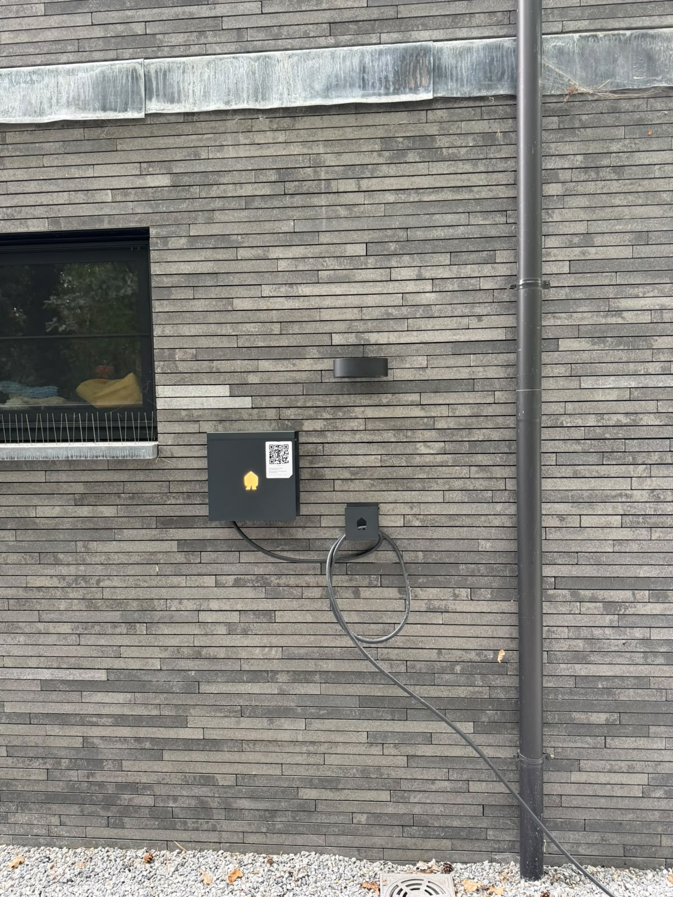

Keerbergenseptember 2026
Smappee EV Wall in het zwart, met laden op zonne-energie
- Situatie
- Nieuwbouwwoning met zonnepanelen en een driefasige aansluiting. Wens: laden op het zonne-overschot, zonder telkens in een app te moeten ingrijpen.
- Oplossing
- Smappee EV Wall (EVW4) driefasig met vaste laadkabel van 8 m, en de Smappee P1-module op de digitale meter.
- Technisch punt
- De P1-module leest op elk moment wat de woning afneemt of injecteert. Zo laadt de auto op het overschot van de panelen, en past de laadpaal zijn vermogen aan zodat de hoofdzekering niet overbelast raakt.